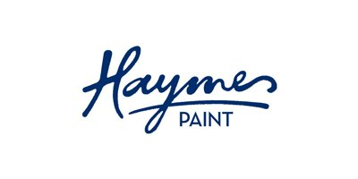

I’m Dan Eaton, a Bundanoon local and professional painter with 25 years of experience working on homes and businesses across the Southern Highlands.
Southern Highlands Painter is my family-run business, built on honest work, fair pricing, and the kind of care you’d expect from someone who actually lives in your community.
Born and Raised in the Southern Highlands
I’ve lived in Bundanoon my whole life, which means I understand these homes, this climate, and this community better than anyone.
The cool, damp winters, the way moisture gets into weatherboard if it’s not prepped and primed properly, which products hold up in a Southern Highlands winter and which ones don’t — that knowledge comes from 25 years of working here, not from a website.
When you hire me, you’re not getting a contractor who drives in from Wollongong or Sydney. You’re getting your neighbour.
Experience & Credentials
I’ve been painting professionally for 25 years, working on everything from heritage weatherboard cottages in Bundanoon to commercial fit-outs in Moss Vale and roof restorations across Bowral and Berrima.
Every job gets the same level of care — thorough surface preparation, quality products, and a finish I’m proud to put my name to.
- NSW Painting Contractors Licence: 168818C
- ABN: 86 601 300 865
- Fully insured — public liability and workers compensation
- 25 years local experience in the Southern Highlands
- Registered member, Green Painters Australia
Services I Provide
- Interior house painting — walls, ceilings, architraves, doors and door jambs
- Exterior house painting — weatherboard, brick, blue board, trims, fascia, eaves and gutters
- Roof painting and sealing — iron, Colorbond and tiled roofs
- Floor painting — residential garages, commercial and industrial spaces
- Commercial and industrial painting — offices, retail spaces and warehouses
- Colour consultation — help choosing the right colours and finishes for your home
Paint Brands We’re Associated With

Why Locals Choose Dan Eaton Painting
There are a lot of painters in the Southern Highlands. Here’s why our customers keep calling us back:
- We’re local — Dan lives in Bundanoon and has worked in these villages for 25 years
- We know the climate — and choose products that hold up to Southern Highlands conditions
- We prepare properly — surface preparation is where most paint jobs fail, and we don’t cut corners
- We’re fully licensed and insured — Licence 168818C, fully insured for your peace of mind
- We’re eco-conscious — we prefer low-VOC paints and are registered Green Painters members
- We’re straight up — free quotes, honest advice, no pushy sales
Get a Free No-Obligation Quote
Whether you’re planning an exterior repaint, freshening up your interiors, or need a roof restoration quote, I’d love to help. Get in touch today and I’ll organise a free, no-obligation quote at a time that suits you.
Get in Touch: Ready to transform and protect your floors? Contact us today for a free, no-obligation quote or call directly on 0409 661 644
Let us bring our expertise in floor painting to your commercial, industrial, or residential space in the Southern Highlands.
Get A Free Quote